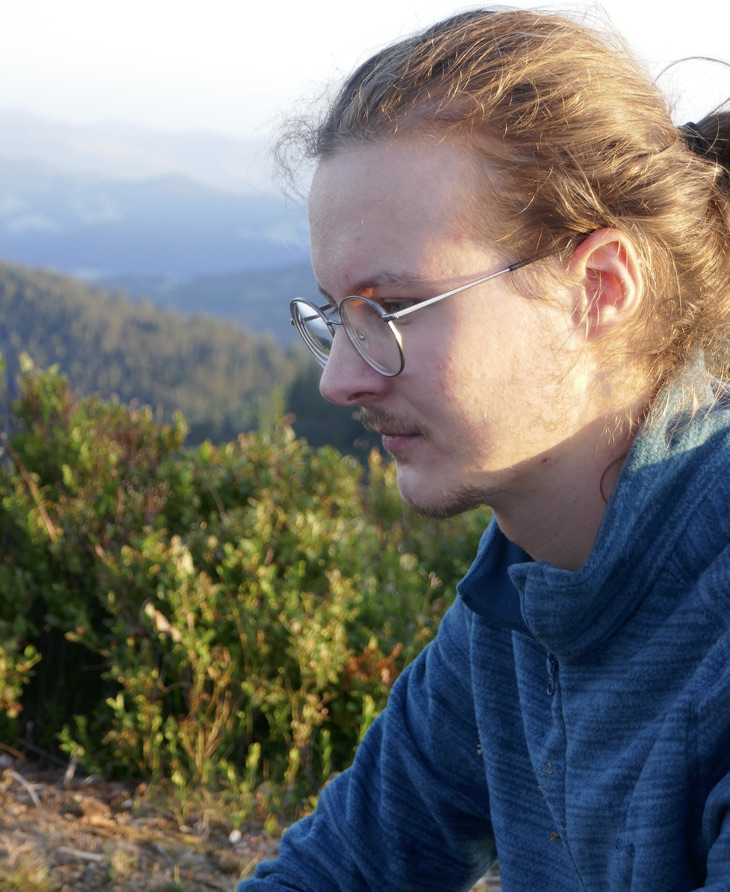

I’m a Ph.D. student at INSA Lyon, in the Inria Beagle team.
Before that, I studied at the École Normale Supérieure in Paris, where I obtained an M. Sc. in theoretical computer science, and an M. Sc. in ecology and evolution.
You can find my CV here, follow me on Twitter, or look at my code on GitHub and on the Inria GitLab.
You can reach me at theotime (.) grohens (@) inria (.)
fr.
My current research interests focus on evolutionary biology, and especially mathematical and computational models of evolution.
The broad goal of my Ph.D. project is to gain a better understanding of how epistatic interactions between different kinds of mutations help shape evolutionary dynamics, and I am currently focusing on the coupling between DNA supercoiling and gene transcription. In order to study this phenomenon under the light of evolution, I develop and use EvoTSC, a simulation aimed at understanding how the transcription-supercoiling coupling can shape the genome over evolutionary timescales.
A Genome-Wide Evolutionary Simulation of the Transcription-Supercoiling Coupling: extended version. Théotime Grohens, Sam Meyer, Guillaume Beslon, Artificial Life (to appear). (hal, doi, pdf)
A Genome-Wide Evolutionary Simulation of the Transcription-Supercoiling Coupling. Théotime Grohens, Sam Meyer, Guillaume Beslon, ALIFE 2021. (hal, doi, pdf)
I teach Computer Science at INSA Lyon, in the Biosciences and Computer Science departments.
In 2021-2022, I taught in the Computer Science track:
In 2020-2021, I taught in the Bioinformatics and Modeling track:
and in the Computer Science track:
In 2019-2020, I taught in the Bioinformatics and Modeling track: